| Profile | SVG reference | WebGL2 attempt | Shared profile / fallback |
|---|---|---|---|
| seed-0000000000 | 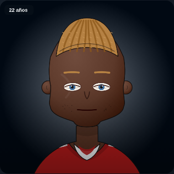 rendered | 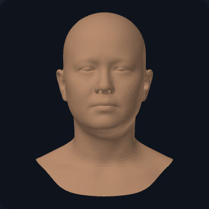 rendered | SF2~sports/default-v2~m0uth~1ai~epw9f3~m~n~b91c1c~f8fafc~1uf7aoh |
| seed-0000000001 | 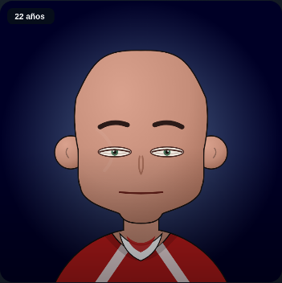 rendered | rendered | SF2~sports/default-v2~59hsd4~0~efwnq4~m~n~b91c1c~f8fafc~1b5us7u |
| seed-0000000042 | 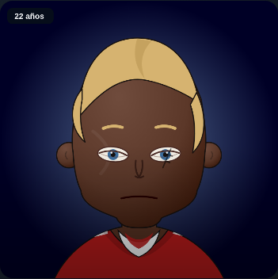 rendered | 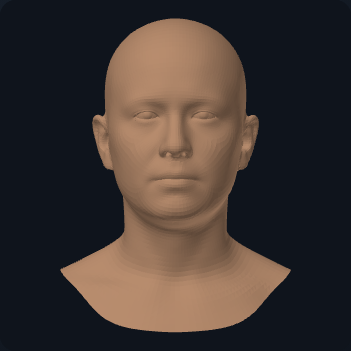 rendered | SF2~sports/default-v2~4wt3ze~4ck~11pcryb~m~n~b91c1c~f8fafc~0flpa3f |
| seed-0000012345 | 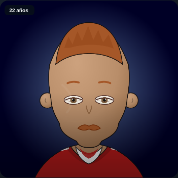 rendered | 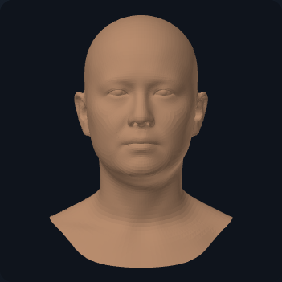 rendered | SF2~sports/default-v2~28a1wj~1jm~isucwo~m~n~b91c1c~f8fafc~0cwt8xr |
| seed-0000424242 | 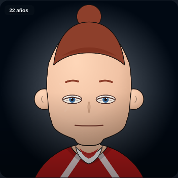 rendered | 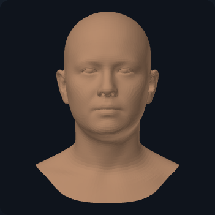 rendered | SF2~sports/default-v2~4xy6ya~1hn~1m4lvab~m~n~b91c1c~f8fafc~0hey2wf |
| seed-0008675309 | 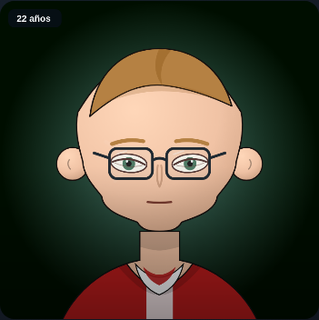 rendered | 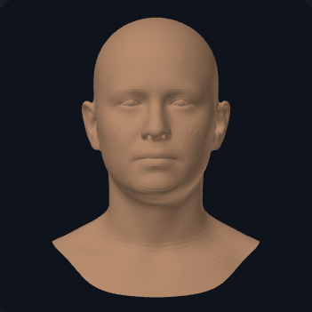 rendered | SF2~sports/default-v2~19xd2s~2v5~qtlk3n~m~n~b91c1c~f8fafc~04bq04b |
| seed-2147483647 | 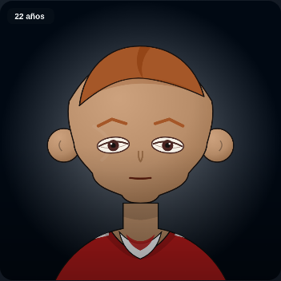 rendered | rendered | SF2~sports/default-v2~17qyas~135~8a1p61~m~n~b91c1c~f8fafc~0no35ns |
| seed-4294967295 | 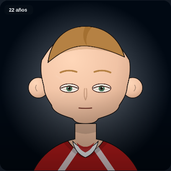 rendered | rendered | SF2~sports/default-v2~1nnt6x~1a9~1aacy02~m~n~b91c1c~f8fafc~0fiva41 |